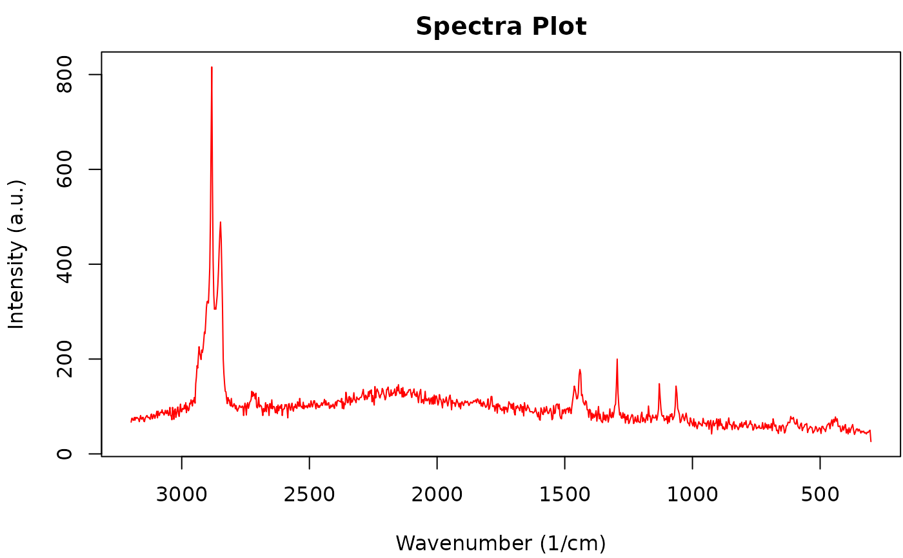

Methods to visualize and convert OpenSpecy objects.
Usage
# S3 method for class 'OpenSpecy'
head(x, ...)
# S3 method for class 'OpenSpecy'
print(x, ...)
# S3 method for class 'OpenSpecy'
plot(x, ...)
# S3 method for class 'OpenSpecy'
lines(x, ...)
# S3 method for class 'OpenSpecy'
summary(object, ...)
# S3 method for class 'OpenSpecy'
as.data.frame(x, ...)
# S3 method for class 'OpenSpecy'
as.data.table(x, ...)Value
head(), print(), and summary() return a textual
representation of an OpenSpecy object.
plot() and lines() return a plot.
as.data.frame() and as.data.table() convert OpenSpecy
objects into tabular data.
Details
head() shows the first few lines of an OpenSpecy object.
print() prints the contents of an OpenSpecy object.
summary() produces a result summary of an OpenSpecy object.
plot() produces a matplot() of an OpenSpecy
object; lines() adds new spectra to it.
See also
head(), print(),
summary(), matplot(), and
matlines(),
as.data.frame(),
as.data.table()
Examples
data("raman_hdpe")
# Printing the OpenSpecy object
print(raman_hdpe)
#> wavenumber intensity
#> <num> <int>
#> 1: 301.040 26
#> 2: 304.632 50
#> 3: 308.221 48
#> 4: 311.810 45
#> 5: 315.398 46
#> ---
#> 960: 3187.990 71
#> 961: 3190.520 71
#> 962: 3193.060 75
#> 963: 3195.590 75
#> 964: 3198.120 67
#>
#> $metadata
#> x y user_name spectrum_type spectrum_identity organization
#> <int> <int> <char> <char> <char> <char>
#> 1: 1 1 Win Cowger Raman HDPE Horiba Scientific
#> license session_id
#> <char> <char>
#> 1: CC BY-NC 5728ddde4f649fd71f6f487fc5ad8d80/dc85257201307a131e71d9ec24aaccbf
#> file_id
#> <char>
#> 1: cb06ce2846b119d932fb6696479a445b
# Displaying the first few lines of the OpenSpecy object
head(raman_hdpe)
#> wavenumber intensity
#> <num> <int>
#> 1: 301.040 26
#> 2: 304.632 50
#> 3: 308.221 48
#> 4: 311.810 45
#> 5: 315.398 46
#> 6: 318.983 42
# Plotting the spectra
plot(raman_hdpe)
